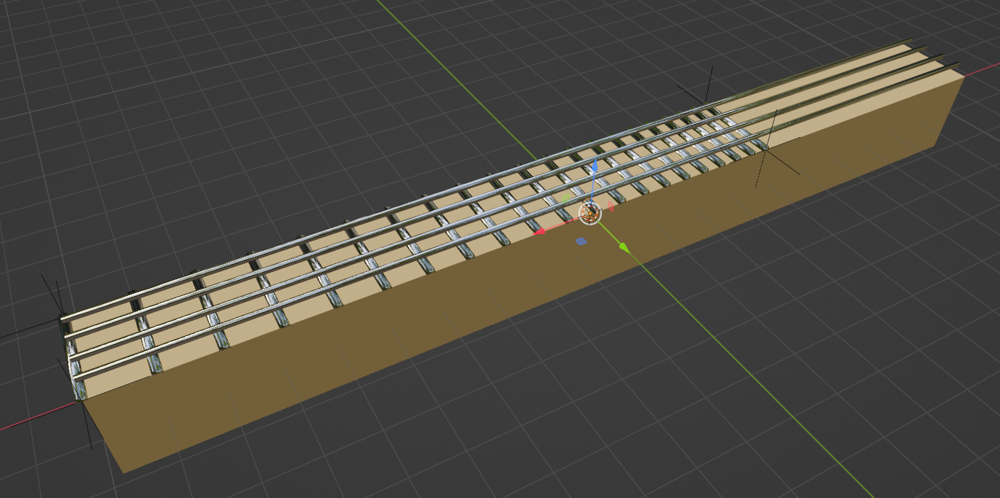

Il progetto e' stato chiamato ArgumentedBassTabs (dal momento che l'intento e' di ottenere la visualizzazione in AR.
La versione di Unity utilizzata e' 2022.3.17f1 LTS.
Per poter lavorare alle funzionalita' di import e visualizzazione di tab senza accedere al laboratorio ho creato un modello semplicistico di un manico di basso per poter visualizzare concretamente il funzionamento di una prima implementazione del playback dei tab. Il modello e' stato realizzato con Blender.
Di fronte alla varieta' di formati di tab presenti e la loro complessita', ho scelto di cercare una libreria con supporto .NET per importare i tab, ho trovato alphaTab.
Unity purtroppo non supporta NuGet (il package manager predefinito di .NET contemporaneo), di conseguenza ho scaricato i singoli file .DLL di alphaTab e le sue dipendenze e li ho importati nel progetto Unity manualmente. Sarebbe bello trovare un alternativa.
Ho cominciato ad analizzare come avviene l'import da parte di alphaTab della tabulatura, ma la documentazione non e' molto chiara.
Per il controllo di versione e backup del progetto ho scelto Unity version control invece di git dal momento che ho letto che utilizzare git crea problemi con Unity, per via del modo in cui Unity gestisce i metadati.